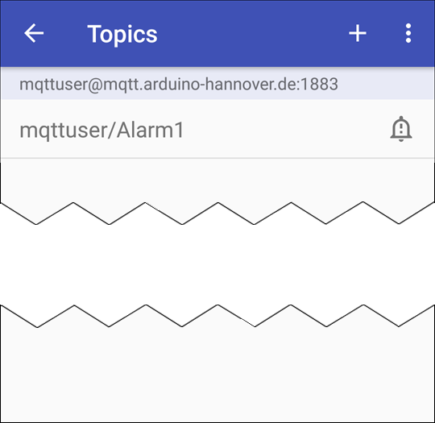
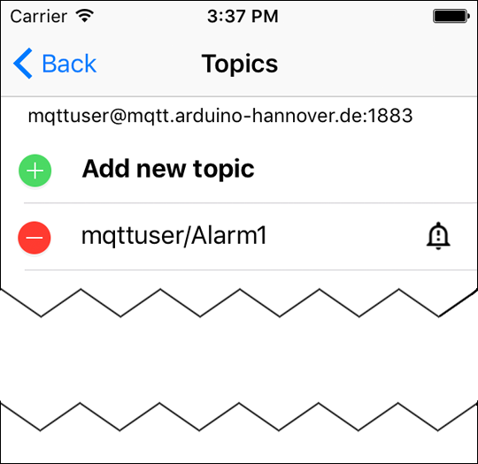

For the reception of messages it is necessary to register for at least one topic.
Der Nachrichteninhalt für das angegebene Topic kann gefiltert werden. Sie können eine JavaScript-Funktion hinzufügen, die dann auf jede angezeigte Nachricht angewendet wird. Tippen Sie unter „Filter Script“ auf ADD bzw. EDIT, um in den JavaScript-Editor zu gelangen.
The topics you can register for, need to be known to you. This means that the topics must already exist on your MQTT server, and you must have read and write access for these topics.


Now you have registered for a topic about which you will be informed by notification and sound signal (depending on the setting).
Many MQTT servers do not response with an error message if you do not have authorization for a topic or the topic does not exist. Therefore it is possible that a topic is displayed in the app, but you do not receive any notification for that.

